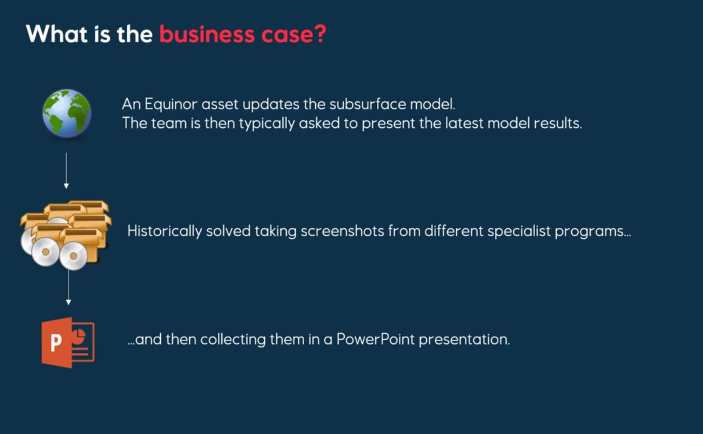
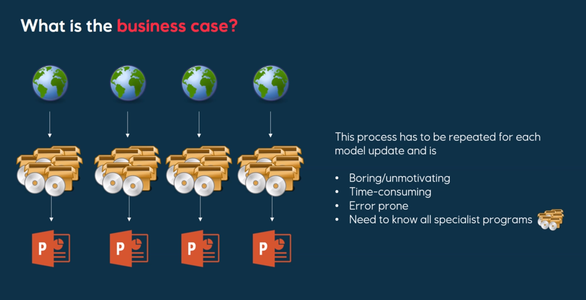
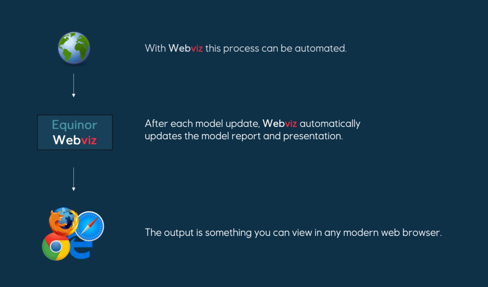
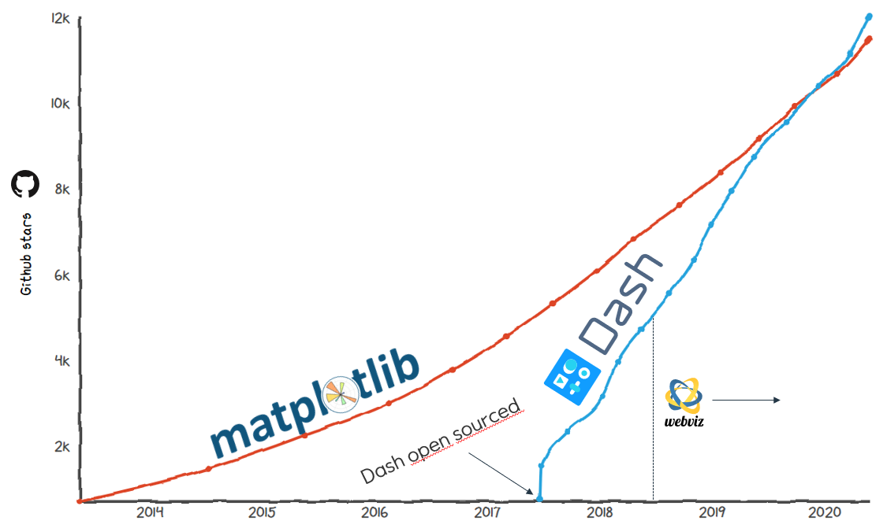
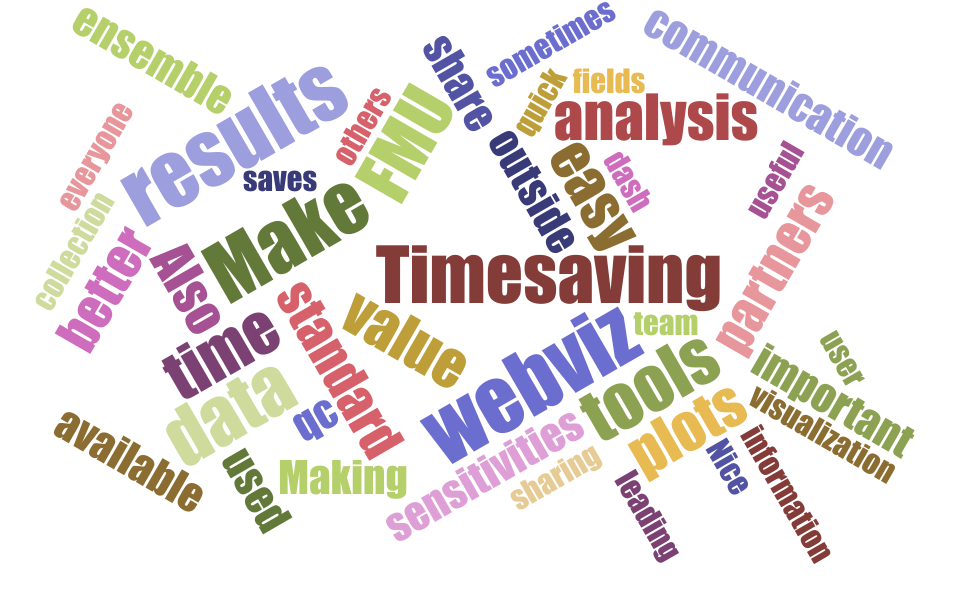
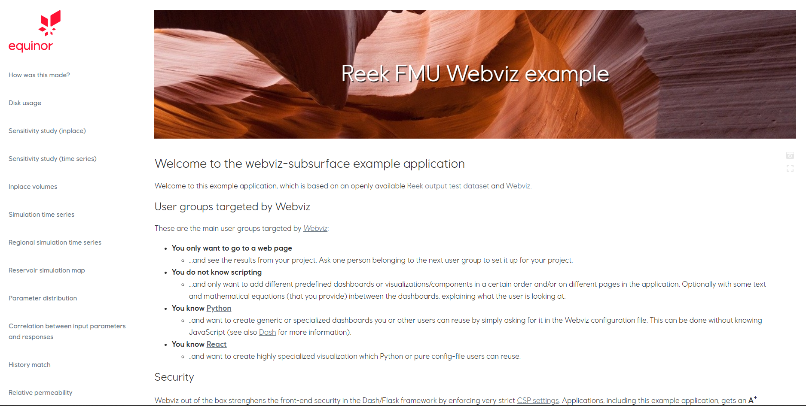
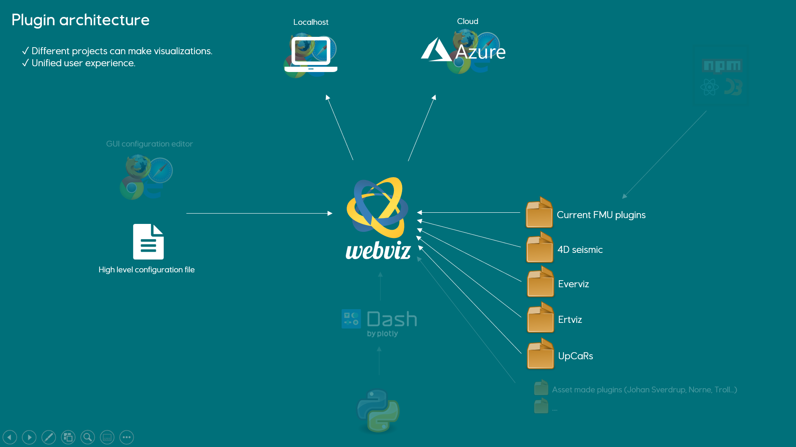

↑
💡 Idea sparked on Åsgard
💡 Idea sparked on Åsgard



↑
🤝 R&T embraced idea
🤝 R&T embraced idea
↑
📖 Started using external framework
📖 Started using external framework

↑
🎉 Version ready for local analysis
🎉 Version ready for local analysis
- More than 15 fields in Equinor are actively using Webviz...
- ...and more than 6 independent projects are creating plugins
— "Webviz allows me to visualize large volumes of information in a fancy way,
leading to better communication between business segments." 💬
leading to better communication between business segments." 💬
— "Applications like webviz is an enabler for FMU. Any value you put on FMU
needs these user-friendly applications to be realized." 👍🏻
needs these user-friendly applications to be realized." 👍🏻
— "Webviz is performing work corresponding to 30.000 hours of manual labor
per year in Johan Sverdrup alone. Webviz is also useful far outside FMU." 🤖
per year in Johan Sverdrup alone. Webviz is also useful far outside FMU." 🤖
— "Very useful for compiling volumes, generating histograms and tornado-plots. Simpler, saves time
and provides better-looking plots compared to doing the same thing in Excel, Spotfire or other tools." 📊
and provides better-looking plots compared to doing the same thing in Excel, Spotfire or other tools." 📊
— "Webviz has nice vizualisations that we sometimes wouldn't be able to make ourselves,
and other times would have to spend time on. And some analysis we wouldn't have thought of at all." 🎨
and other times would have to spend time on. And some analysis we wouldn't have thought of at all." 🎨
— "I would spend 3-4 days to make the same in Spotfire → now it
takes me 30 minutes [☕ included]"
takes me 30 minutes [☕ included]"
Your business case for using Webviz?

Managament, partners meetings...
You only want to go to some existing web page.
You only want to go to some existing web page.

Live example
Configure application content
Without any scripting knowledge,
you can configure and create your own web application!
Without any scripting knowledge,
you can configure and create your own web application!

Auto-completion & "continuous feedback"
Create custom dasboards
By only knowing Python, users/project/assets
can create new custom dashboards!
By only knowing Python, users/project/assets
can create new custom dashboards!

Custom responsive visualizations!
Users (knowing JavaScript) can create highly customized and responsive visualization components. Python users can then utilize these components without knowing JavaScript!
Users (knowing JavaScript) can create highly customized and responsive visualization components. Python users can then utilize these components without knowing JavaScript!

